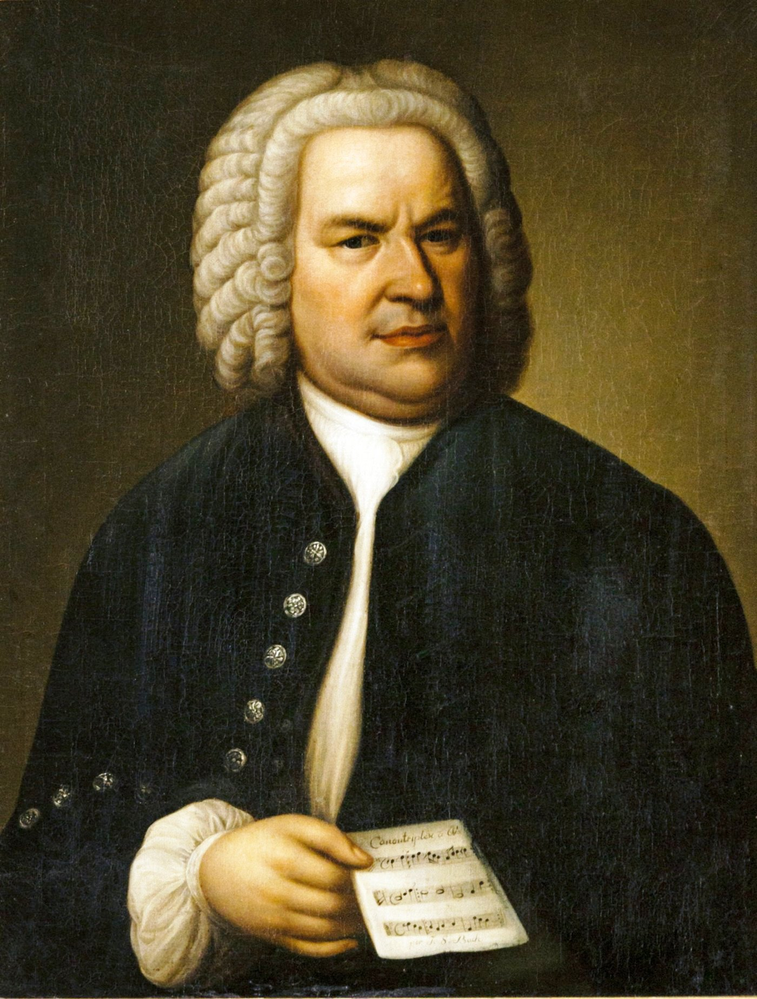

music На главную Выход  Иоганн Себастьян Бах Органные произведения Вокальные произведения Произведения для клавесина Органные произведения Слушайте <a href='https://music.yandex.ru/album/193508/track/1954209'>Toccata und Fuge d-moll BWV 565 für Orgel</a> — <a href='https://music.yandex.ru/artist/92025'>Werner Jacob</a> на Яндекс Музыке Слушайте <a href='https://music.yandex.ru/album/193508/track/267451'>Wachet auf ruft uns die Stimme, BWV 645</a> — <a href='https://music.yandex.ru/artist/92025'>Werner Jacob</a> на Яндекс Музыке Слушайте <a href='https://music.yandex.ru/album/193508/track/1954207'>Prelude and Fugue in A minor BWV543</a> — <a href='https://music.yandex.ru/artist/92025'>Werner Jacob</a> на Яндекс Музыке Наверх Вокальные произведения Слушайте <a href='https://music.yandex.ru/album/187774/track/1895810'>Cantata: "Jauchzet Gott in allen Landen", BWV51: I: Arie: Jauchzet Gott in allen Landen</a> — <a href='https://music.yandex.ru/artist/83779'>Elisabeth Schwarzkopf</a> на Яндекс Музыке"> Слушайте <a href='https://music.yandex.ru/album/187774/track/1895816'>Cantata: "Jauchzet Gott in allen Landen", BWV51: II: Reziativt: Wir beten zu dem Tempel an</a> — <a href='https://music.yandex.ru/artist/83779'>Elisabeth Schwarzkopf</a> на Яндекс Музыке Слушайте <a href='https://music.yandex.ru/album/187774/track/1895818'>Cantata: "Jauchzet Gott in allen Landen", BWV51: III: Arie: Höchster, mache deine Güter ferner</a> — <a href='https://music.yandex.ru/artist/83779'>Elisabeth Schwarzkopf</a> на Яндекс Музыке Наверх Произведения для клавесина Слушайте <a href='https://music.yandex.ru/album/4902/track/59330'>J.S. Bach: Goldberg Variations, BWV 988 - Aria</a> — <a href='https://music.yandex.ru/artist/142680'>Trevor Pinnock</a> на Яндекс Музыке Слушайте <a href='https://music.yandex.ru/album/1720924/track/59306'>J.S. Bach: Goldberg Variations, BWV 988 - Var. 1 a 1 Clav.</a> — <a href='https://music.yandex.ru/artist/142680'>Trevor Pinnock</a> на Яндекс Музыке Слушайте <a href='https://music.yandex.ru/album/1720924/track/59322'>J.S. Bach: Goldberg Variations, BWV 988 - Var. 2 a 1 Clav.</a> — <a href='https://music.yandex.ru/artist/142680'>Trevor Pinnock</a> на Яндекс Музыке Наверх
Органные произведения Слушайте <a href='https://music.yandex.ru/album/193508/track/1954209'>Toccata und Fuge d-moll BWV 565 für Orgel</a> — <a href='https://music.yandex.ru/artist/92025'>Werner Jacob</a> на Яндекс Музыке Слушайте <a href='https://music.yandex.ru/album/193508/track/267451'>Wachet auf ruft uns die Stimme, BWV 645</a> — <a href='https://music.yandex.ru/artist/92025'>Werner Jacob</a> на Яндекс Музыке Слушайте <a href='https://music.yandex.ru/album/193508/track/1954207'>Prelude and Fugue in A minor BWV543</a> — <a href='https://music.yandex.ru/artist/92025'>Werner Jacob</a> на Яндекс Музыке Наверх
Вокальные произведения Слушайте <a href='https://music.yandex.ru/album/187774/track/1895810'>Cantata: "Jauchzet Gott in allen Landen", BWV51: I: Arie: Jauchzet Gott in allen Landen</a> — <a href='https://music.yandex.ru/artist/83779'>Elisabeth Schwarzkopf</a> на Яндекс Музыке"> Слушайте <a href='https://music.yandex.ru/album/187774/track/1895816'>Cantata: "Jauchzet Gott in allen Landen", BWV51: II: Reziativt: Wir beten zu dem Tempel an</a> — <a href='https://music.yandex.ru/artist/83779'>Elisabeth Schwarzkopf</a> на Яндекс Музыке Слушайте <a href='https://music.yandex.ru/album/187774/track/1895818'>Cantata: "Jauchzet Gott in allen Landen", BWV51: III: Arie: Höchster, mache deine Güter ferner</a> — <a href='https://music.yandex.ru/artist/83779'>Elisabeth Schwarzkopf</a> на Яндекс Музыке Наверх
Произведения для клавесина Слушайте <a href='https://music.yandex.ru/album/4902/track/59330'>J.S. Bach: Goldberg Variations, BWV 988 - Aria</a> — <a href='https://music.yandex.ru/artist/142680'>Trevor Pinnock</a> на Яндекс Музыке Слушайте <a href='https://music.yandex.ru/album/1720924/track/59306'>J.S. Bach: Goldberg Variations, BWV 988 - Var. 1 a 1 Clav.</a> — <a href='https://music.yandex.ru/artist/142680'>Trevor Pinnock</a> на Яндекс Музыке Слушайте <a href='https://music.yandex.ru/album/1720924/track/59322'>J.S. Bach: Goldberg Variations, BWV 988 - Var. 2 a 1 Clav.</a> — <a href='https://music.yandex.ru/artist/142680'>Trevor Pinnock</a> на Яндекс Музыке Наверх